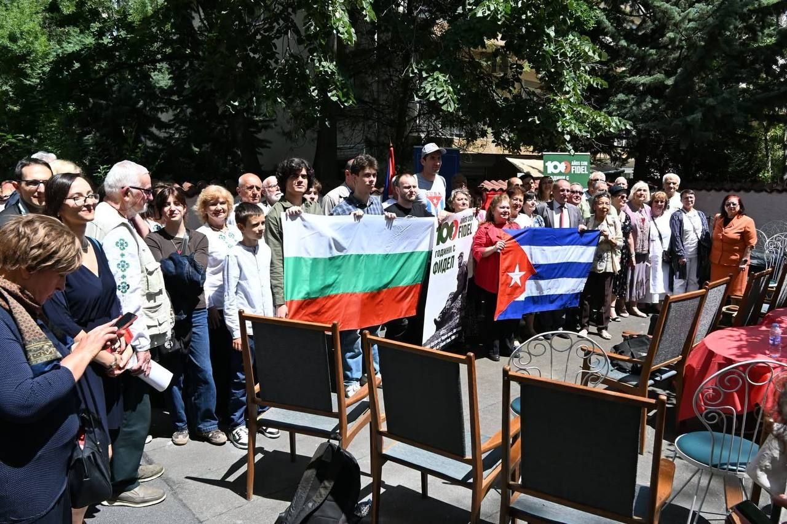
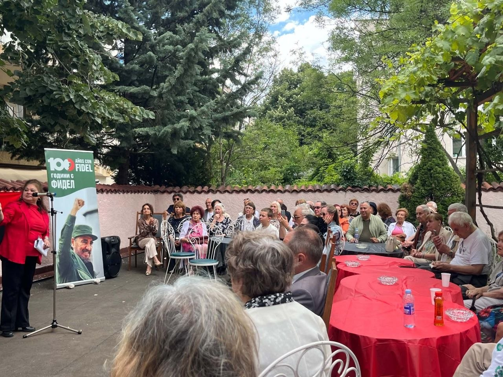
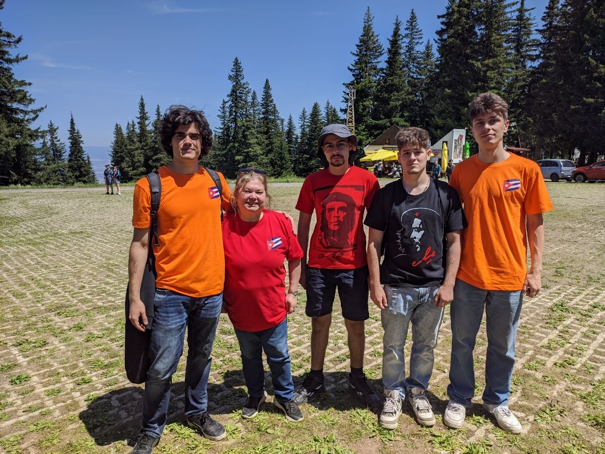
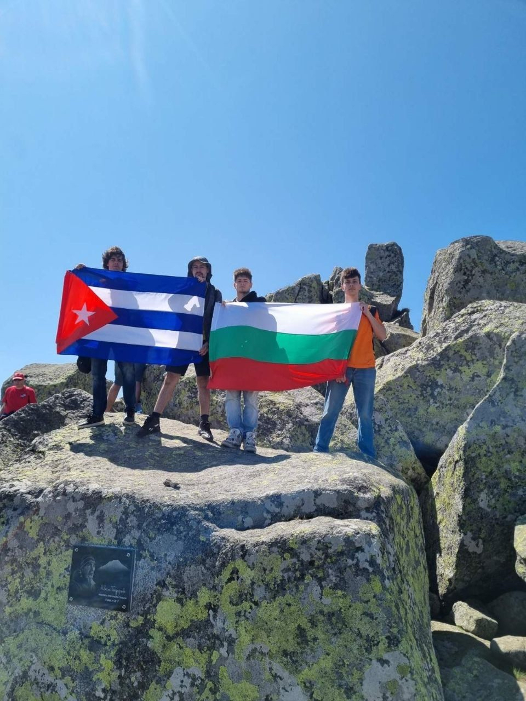

Членове на ,,Българска работническа младеж” взеха участие в ежегодното отбелязване на 25 юли – празник на Куба и честване на започналата на 26 юли 1953 г. Кубинска революция. Members of the "Bulgarian Workers' Youth" took part in the annual celebration of July 25 - Cuba's holiday and a celebration of the Cuban Revolution that began on July 26, 1953.
На събитието бяха отправени остри критики към задушаващото ембарго, което САЩ продължава да налага върху народа на Куба. Беше припомнена изключителната роля на революционната борба, водена от Фидел Кастро и борците от ,,Движение 26 юли” , която освободи Куба от хватката на империализма и постави основите на кубинския социализъм. The event sharply criticized the suffocating embargo that the United States continues to impose on the people of Cuba. It recalled the exceptional role of the revolutionary struggle led by Fidel Castro and the fighters of the "July 26th Movement", which liberated Cuba from the grip of imperialism and laid the foundations of Cuban socialism.
Честването беше организирано от кубинското посолство и Асоциация за приятелство „България-Куба“. Открито беше с реч на Нейно Превъзходителство посланичката на Република Куба в България г-жа Мариета Гарсия Хордан, която осъди действията на САЩ, но и изрази надеждата си за социалистическото бъдеще на Куба. The celebration was organized by the Cuban Embassy and the Bulgaria-Cuba Friendship Association. It was opened with a speech by Her Excellency the Ambassador of the Republic of Cuba to Bulgaria, Ms. Marieta Garcia Jordan, who condemned the actions of the United States, but also expressed her hope for the socialist future of Cuba.
Последваха изказвания на представители на редица леви организации, сред които и Българска работническа младеж. This was followed by speeches by representatives of a number of left-wing organizations, including the Bulgarian Workers' Youth.
В края на събитието тържествено бяха връчени знамената на Република България и Република Куба на представителите на ,,Българска работническа младеж” , които, заедно със съмишленици и другари от други комунистически организации, се включиха в инициативата за предвиденото на 26.07 изкачване на Черни връх. At the end of the event, the flags of the Republic of Bulgaria and the Republic of Cuba were solemnly presented to the representatives of the "Bulgarian Workers' Youth", who, together with like-minded people and comrades from other communist organizations, joined the initiative for the planned climb of Cherni Vrah on July 26.